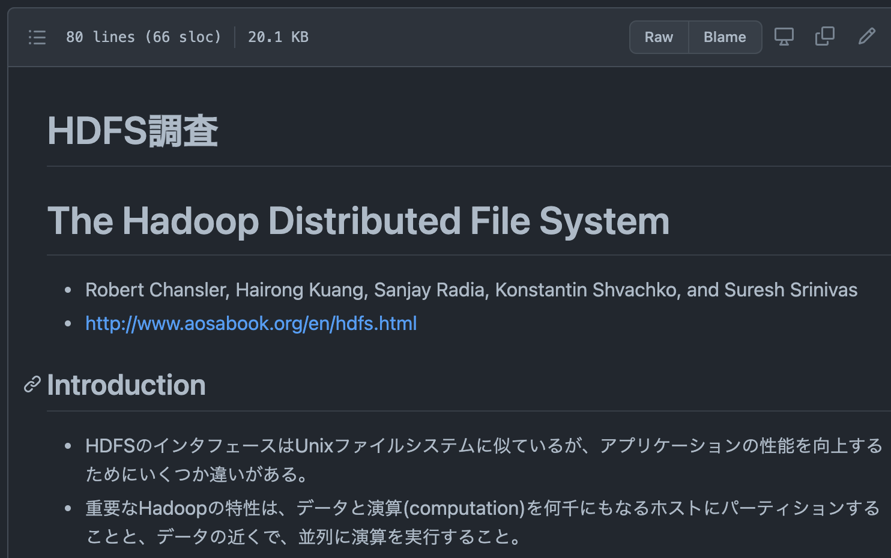
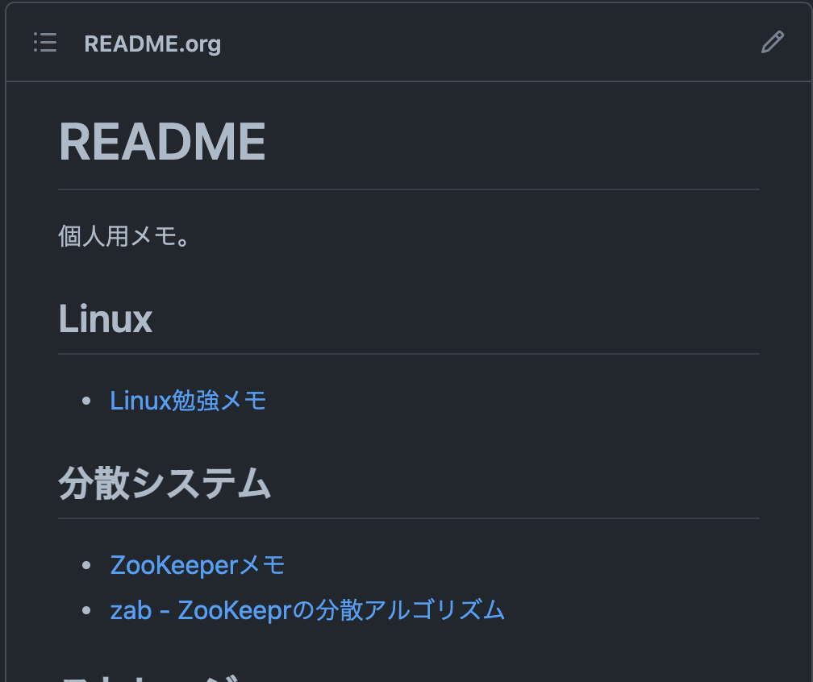

Table of Contents
1 はじめに
私はemacsのorg-modeでメモを書いていますが、複数台のPCで編集したり、モバイルデバイスから閲覧するよい方法が無いか探していました。ブログに使っているgithub pagesにアクセス制限をかけられればよいのですが、そのためには有償のプランを契約しないとだめそうです。また、Pelican等の静的サイトジェネレーターでHTMLにレンダリングする必要があり、手間がかかります。
一方で、Dropbox等のクラウドストレージに作成したorgファイルを置くだけでは、テキストファイルとしての閲覧しかできないため、見やすいようにレンダリングして欲しいところです。
求める要件を並べると、こんな感じです:
- 複数デバイスで編集、閲覧したい
- 個人用のWikiなので、アクセス制限をかけたい
- orgファイルそのままでなく、見やすくレンダリングして表示しして欲しい
- コンパイルやエキスポートの手間はなるべくかけたくない
- できれば無料が良い
2 org-mode + github(/gitlab)でパーソナルWiki
いろいろと検索したところ、org-modeとgithub(/gitlabも)の相性が良さそうであることがわかりました。
2.1 org-modeのレンダリング
これまで私はレポジトリのREADMEをわざわざ慣れないマークダウン記法で書いていましたが、なんと、githubは README.org ファイルを作成すればレンダリングして表示してくれるという うれしい情報 を見つけました。(yasuykさんありがとうございます!)
そして、READMEだけでなく、レポジトリに置いた他の *.org ファイルもレンダリングして表示してくれるようです。
orgファイルのレンダリング例: 
2.2 githubのプライベートレポジトリ
更に、githubは2019年からプライベートレポジトリの作成を 無制限に無償化していた ようです。私はgithubに複数レポジトリを持って、ブログもgithub pagesで公開していましたが、このことは知りませんでした。これはありがたい変更です。
レポジトリ作成の際に、publicでなくprivateを選択します。gitlabでも同様ですね。
2.3 複数デバイスでの共有
普通のgithubレポジトリなので、もちろん複数デバイスでの閲覧、変更が可能です。githubに同じアカウントでサインインするだけです。
特に複数PCで編集するには、2台目以降のPCにおいてgit cloneするだけなのでとても使い勝手が良いです。githubではgitでのパスワード認証が廃止されているので、パーソナルアクセストークンを生成して、これをパスワードの代わりに使用する必要があります。
gitlabでも同様ですが、個人モバイルデバイスからオフィスのgitlabにアクセスすることはあまり無いかもしれません。
2.4 コンパイル等不要
私のgithub pagesのブログは静的サイトジェネレーターのPelicanを使っていますが、だいぶ記事がたまってきたせいか、コンパイルに1分以上かかるようになっています。
githubがorgファイルのレンダリングをしてくれるので、レポジトリにorgファイルのままgit pushするだけで済みます。毎回プッシュのたびに1分時間が節約できるのは、大きなメリットです。
3 Tips
3.1 READMEからリンクを貼る
githubではご存知のように、レポジトリのトップページにREADMEファイルをレンダリングして表示します。パーソナルWikiのトップページとして、README.orgに各orgファイル(=メモ)へのリンクを貼っておくことで、使い勝手が良くなると思います。
パーソナルWikiトップページ: 
現在、手動でREADME.orgを作成して各記事へのリンクを貼っています。自動で作成してくれるともっとよいのですが、既に先人が作っているような気もするので、うまい方法がないか探してみたいと思います。
追記: → 探しても見つからなかったので、 Pythonスクリプト を自作しました。
4 終わりに
org-mode と github(/gitlab) のプライベートレポジトリを利用して、複数デバイスから編集、閲覧できる個人用のWikiページを持てることがわかりました。
5 おまけ
いつの頃からか、org-modeで改行すると、勝手にインデントされるようになりました。ものすごく使い勝手が悪いので、抑止する方法を探したところ、案の定、先人が解決 してくれていました。(あお日記さん、どうもありがとうございます。)
org-modeでのみ有効となるようにしました。
;; Suppress auto-indent for org-mode (add-hook 'org-mode-hook '(lambda () (electric-indent-local-mode -1)))
その他、最近見つけた技:
C-c C-oリンクを開く